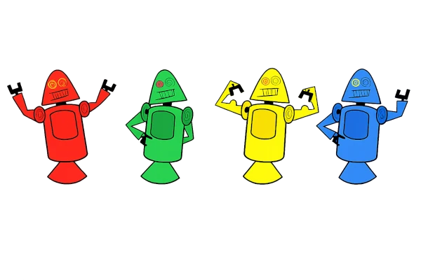
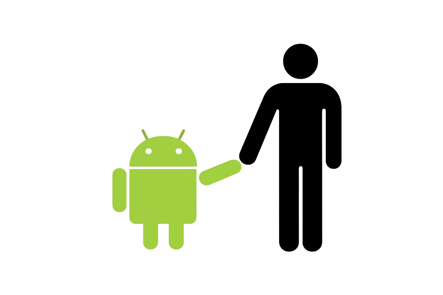

HISTÓRIA DO MASCOTE DO ANDROID
O Bugdroid é muito mais do que um simples robô verde. Símbolo oficial do Android, ele se tornou um dos mascotes mais famosos da tecnologia. Nesta página, você conhecerá sua origem, como foi criado e a evolução que o transformou em um dos maiores ícones da era digital. Você também descobrirá como a designer Irina Blok desenvolveu a primeira versão do mascote utilizando o software de desenho vetorial Inkscape, dando início à identidade visual que hoje é reconhecida em todo o mundo.
A PRIMEIRA VERSÃO
A primeira versão do Bugdroid surgiu em 2007, quando o engenheiro Dan Morrill criou os Dandroids, robôs simples que serviram como os primeiros conceitos visuais do Android. Embora nunca tenham sido oficiais, eles inspiraram a criação do mascote que conhecemos hoje.

SURGE UM NOVO MASCOTE
Após os primeiros protótipos conhecidos como Dandroids, o Google percebeu a necessidade de criar um mascote que fosse mais simples, amigável e fácil de reconhecer. Em 2007, a designer Irina Blok recebeu a missão de desenvolver um símbolo que representasse a identidade do Android. Inspirada nos pictogramas de banheiro, ela criou um robô com formas simples, antenas e corpo arredondado, dando origem ao mascote que mais tarde seria conhecido como Bugdroid.

O trabalho de Irina Blok foi além da criação de um simples logotipo. Seu objetivo era desenvolver um símbolo que transmitisse simplicidade, inovação e proximidade com os usuários. Com o lançamento oficial do Android

O design do Bugdroid foi inspirado nos pictogramas das portas de banheiros públicos, conhecidos por sua simplicidade e fácil identificação. A ideia era criar um mascote com formas básicas, capaz de ser reconhecido instantaneamente por pessoas de qualquer lugar do mundo.
Quer Aprender Mais?
Outro assunto curioso em relação ao androide é que cad versão sempre foi nomeada em homenagem a um doce, em ordem alfabética a partir da versão 1.5 ate a 9.0.
Infelizmente o android Q não existiu pois o google resolveu pôr fim a essa divertida prática e começou a usar numerações, o que deu origem ao androide 10.
Acesse aqui o site androide history para conhecer a sequência das versões "adocicadas" e o que cada uma trouxe para o sistema android.
Então é isso! espero que você tenha gostado do nosso antigo com essa curiosidade sobre o sistema android e seu simpatico mascote.